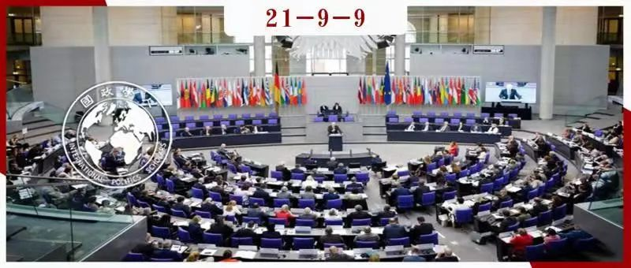
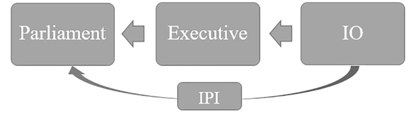
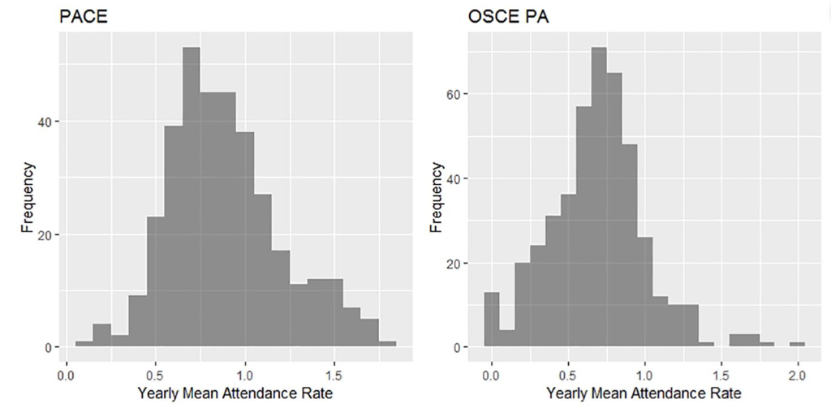
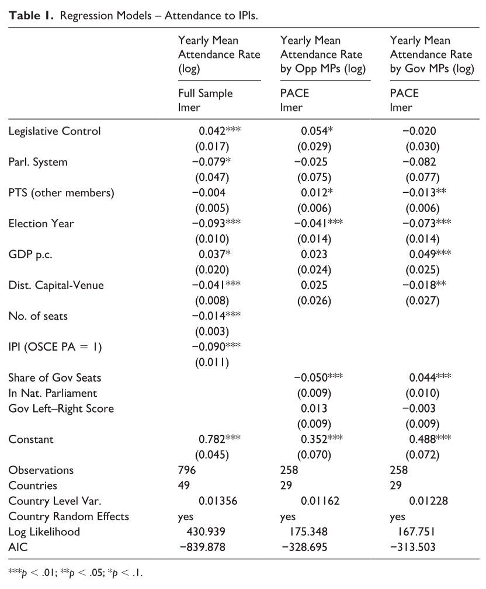

收录于合集 #理论研究 96个

作品简介
作者： Jana Lipps, 苏黎世联邦理工学院博士候选人，研究方向包括欧洲一体化和国际组织的制度设计等。
编译： 李博轩（国政学人编译员，北京大学国际关系学院博士生）
来源： Lipps, J. Intertwined parliamentary arenas: Why parliamentarians attend international parliamentary institutions. European Journal of International Relations (2021). https://doi.org/10.1177/1354066120946480stitutions, and Ethnic Inequality. International Organization , 75(3), 665-697.
归档： 《国际关系前沿》2021年第9期，总第36期。

内容提要
政治权力的国际化拉长了公民和民选代表之间的授权链条。这提升了行政的主导地位，削弱了议会的控制。国际组织议会机构是隶属于国际组织的议会大会，有缓解全球治理中的"议会赤字"的能力，但常因权力薄弱招致批评。本文重新审视了这一批评，认为国际组织议会机构提供了一条规避政府特权的信息获取渠道，并因此加强了国家议会控制行政的能力。这种好处解释了国家议会议员参加国际组织议会机构的动机。本研究基于2007年至2015年欧洲委员会议会大会和欧洲安全与合作组织议会大会议员出席情况的新数据。研究结果支持议会舞台的交织现象，因为国家议会的属性影响了出席率。具有更高审查能力的议会更多地参与IPI，而代表团的组成与激励控制有关，这导致政府和反对党采取不同的参与模式。
01
交织的议会舞台
国际关系的研究者经常对权力转移到国际层面并影响国家的代议制民主的运作表示担忧，认为这导致了“民主赤字”(democratic deficit)，即决策权从长期存在的民主机构中被夺走。国际组织议会机构(International Parliamentary Institutions, IPI)是一个附属于国际组织的机构，由至少三个国家的议员构成，这些语言或由选举产生，或由国家议会任命。它的制度化使人们能够有组织地、长期地和持续地参与国际组织的决策，并将审查永久地嵌入到国际决策程序中，并具有通过议员的参与使国际政治民主化的潜力。但由于IPI在很大程度上不具备议会的代表和立法等核心职能，其权限非常有限。
IPI是独特的，因为它们由代表选民利益的国家议员组成，因此拥有必要的合法性，可以通过控制政府的外交政策行动来提高全球治理的民主质量。衡量IPI对全球民主秩序的贡献不应基于其正式的决策权，而应考虑其作为跨国话语平台的作用，以及它提升国家议员能力的潜力。不管拥有的权力大小如何，IPI都拥有一个共同的特点，即作为交流和获取信息的场所。议员们通过在国际机构和国际组织所在地与同事的交流可以收集到很多他们在其他情况下可能无法了解的信息。这些信息涉及到行为者的偏好、问题的突出性和建立联盟的可能性。议员们可以据此了解行动者面临的来自本国和党派的限制，以及达成协议所需的和可接受的让步。如果这些信息完全由一国政府控制，那么就无法阻止他们将自身偏好作为唯一的选项。如图1所示，IPI可以绕过行政渠道，将信息直接传递到国家议会中，这增强了议员监督和批评政府行为的可能性和可信度，并因此增加了对政府的压力，削弱了政府的独家解释权，甚至可能重塑本国的外交政策。

图1 国际组织与国家议会间的信息流动
如果议员们把IPI视作补充国家议会职能的信息获取点，那么他们应该经常参加IPI的会议。但由于大部分IPI的成员是由间接选举产生的，即由各国议会任命的议员组成，因此他们必须平衡国内和国际任务，并充分考虑选民的偏好。这种双重身份同时也使得从IPI中获取的信息可以直接传回国家议会。
02
假设
本文认为议员参与IPI的程度受以下三个因素影响：
首先是各国议会对监督政府行为的重视程度不同。一般来说，积极控制内政的议会，可能认为在外交事务方面也更需要这样做。作者假设议会相对于行政部门的权力大小与议员们参加IPI的活动强度正相关。
其次，参加IPI的积极性与特定政治体系中行政部门和立法部门之间的权力分立有关。议会制下，政府要对议会负责，监督是议会反对派的任务。但执政党或执政联盟具有类似的偏好并拥有获取信息的特权，因此IPI对他们而言并不是有用的信息收集渠道。在总统制下，议会与总统互相平衡，议员们对加强议会权力有明显的兴趣，特别是当议会多数派反对总统时。因此，总统制下议会相对政府有更大的独立性，有关政府行为的额外信息渠道具有更大的价值。因此我们假设总统制国家的代表团会更多地参与IPI。
为探究议员出席模式与国家议会舞台的联系，IPI必须满足以下条件：议员必须是间接选举产生的，IPI应定期举行会议（每年不少于一次），而欧洲委员会议会大会（Parliamentary Assembly of the Council of Europe, PACE)和欧洲安全合作组织议会大会(Organization for Security and Co-operation in Europe Parliamentary Assembly, OSCE PA)符合这些要求。这两个议会的成员基本上是重叠的，这将使我们能够看到来自同一国家的代表团在各IPI中的不同出席模式。相比之下，后者比前者享有的权力要少得多。
本研究收集了2007年至2015年间参加IPI代表团的面板数据。OSCE PA每年举行3届会议，有57个参与国；PACE每年举行4次会议，有47个成员国。被解释变量被设定为出席会议的议员人数除以一个代表团在大会中拥有的总席位数，然后取一年的平均值。

图2 PACE和OSCE PA的出席情况
主要解释变量的操作方法如下：
议会监督政府的能力由V- DEM数据集中立法部门对行政部门的制约指数来衡量。该指数由4个变量组成，测量立法部门对行政部门进行质询调查和监督的能力，以及反对派在多大程度上可以违背政府的意愿进行监督。该变量取值范围为0到1。
关于政治制度的假设，本文使用了政治机构数据库(Database of Political Institutions)的一个衡量标准。总统制记为0，议会制记为1。对于既有总统又有总理的模糊情况，如果总统拥有否决权或任命总理的权力以及解散议会的权力，该国被编码为0，如果没有则被编码为1。
研究还控制了几个可能影响出席情况的因素。对于IPI之间的差异，作者将PACE记为0，OSCE PA记为1。对于议会可资助差旅的资源，作者使用人均GDP作为替代。此外还包括一个国家的首都与IPI会议地点之间的直线距离，这有助于控制议员的“旅行癖”(wanderlust)，即参加遥远地区的会议以获得差旅报酬。我们还添加了政治恐怖等级(Political Terror Scale)得分（除国家i外所有其他成员国的平均值），以说明其他成员国人权和民主领域的危机势头。向IPI增派一名议员的有效性可能会随着已经出席议员总数的增加而降低，因此代表团的总席位数也需要控制。最后，国内立法机构选举的年份，议员可能优先考虑国内问题和连任而非国际问题，因此我们增加了一个虚拟变量，如果一国在某年举行了立法选举，则编码为1。
03
分析和结果

表1列出了线性混合效应模型的回归结果。代表团出席率与国家议会的立法控制活动有关，经常传唤质询政府官员的议会也倾向于有更高的出席率。一个国家是总统制还是议会制对出席率有影响，如果一个代表团来自议会制国家，出席率就会降低。控制变量的回归结果也很有趣：成员国人权状况的变化与两个IPI的出席率没有关系，选举年出席率明显下降；总席位数越多，平均出席率就越低；较高的人均GDP使出席率略有增加；与“旅游癖”效应的猜测相反，如果会议地点离首都更远，出席率就会下降；权力较小的IPI的出席率明显更低。
从参加PACE的代表团组成看，大多数代表团都是由政府和反对党共同出席的，且双方人数大致相同。本文对反对党和政府的出席率进行了取对数处理，估计了一个国家随机效应模型，并加入了政府在国家议会中的席位比重和政府意识形态的左右两个额外的控制变量。如表1的第二和第三列所示，国内议会审查权与反对派议员在代表团中的比例正相关，而政治制度对代表团的组成没有明显影响。在选举年中，反对党议员的出席大大减少。相反，执政党议员的出勤是由一个不同的逻辑推动的，国内的立法机构控制能力与执政党议员的出席没有明显关联，因为相比IPI他们有更好的信息收集渠道。而其他成员国侵犯人权的行为使得反对党更多地出席会议，执政党议员则倾向于不出席。更高的人均GDP有利于议员的总体出席情况，对执政党议员尤为明显。选举年中，反对党和执政党的注意力都更集中于国家层面。距离会议地点越远，执政党议员的出席率越低。而在国家议会中占有的席位优势通常也会在IPI中呈现，因而代表团的组成一定程度上反映了国家议会的组成情况，同时，政府的意识形态取向对出席模式没有明显影响。
04
讨论
我们对IPI的出席模式有什么了解，IPI可能履行的民主职能是什么？
本研究的第一个收获是国际和国内的议会舞台在运作逻辑上有不同程度的关联。研究结果表明，议员们的出席行为与他们的国家议会背景相关。在国内积极行使职能的议会出席IPI的人数更多。强势立法机构的较高出席率是由反对派议员的利益驱动的，他们的席位份额越高，在国家层面的监督就越强。这些议员认为有必要检查本国政府在国际组织中的活动，并因此参加相应的国际组织议会。然而，IPI往往不具备在国际组织框架内挑战本国政府决策的能力。
本研究选择了两个在成员和政策领域上有重叠的IPI，进一步比较了议会权力对出席情况的影响。本文考虑的PACE和OSCE PA，前者的政策建议被认为具有相对的影响力，而后者则一直保持着非正式的互动渠道，却未能将其制度化，政府间资源合作的特点仍然主导着OSCE PA的运作。研究结果表明，议员们对具有更多审查能力的IPI的兴趣相对更大，因为它们更有助于对政府的外交政策进行知情和批判性评估。然而研究结果也表明，控制关系超越了IPI本身拥有的控制功能，议员们利用IPI来收集有关该机构决策的信息，并将这些信息传回国家议会。
在立法- 行政关系中，谁控制谁取决于政治制度。本研究比较了总统制和议会制的出席情况，结果显示议会制的出勤率平均较低。这一发现证实了关于国家议会的功能逻辑如何延伸到IPI的论点。议会制下，由于对外交政策的审议是在政党或联盟内部进行的，因此议员出席率较低，主要是执政党的代表更倾向于不出席，而反对党在议会制和总统制度下则没有太大差别。国内政治制度决定了将IPI作为工具的行为体，并因此影响了代表团的构成。
此外，出席情况也与政策有关。人权问题是两个议会的主要工作之一，监督的义务更大，反对党议员通常出席率较高，而执政党似乎有所收敛，可能是在等待政府的外交解决方案。在国内选举中，议员倾向于关注本选区的利益。
05
总结
在过去的几十年中，我们看到议员们越来越多地参与到一种新型的机构即IPI中。它们的兴起受到了一些人的怀疑，他们认为这些机构只是“空谈室”，建立这些机构只是为了在国际组织内部创造一个合法的形象，但并没有起到积极和有效的控制作用。大多数IPI在任命官员、修改条约或预算审批方面决策权非常有限。在这种背景下，议员们为什么要参加IPI呢？
本研究从IPI补充国家议会的职能这一观点出发，认为IPI是议员们获取信息的场所，有助于克服行政部门的特权。这些信息被反馈回国家议会的舞台上，使审查活动得以进行，或是根据IPI的权限，对组织内政府代表提出质询。议员们对IPI的兴趣是由国家议会的功能逻辑驱动的。研究显示了国际和国家议会舞台是如何交织在一起的，以及国内各机构的权力和运行是如何影响到IPI的。而随着可能越来越多的政策范围重叠，那些在国际组织中拥有更多权力的议会机构是否会在争夺议员注意力的竞争中获胜目前尚不清楚，但本研究指向这个方向。
鉴于直接选举产生的IPI数量非常有限，了解国家和国际议会舞台之间的“个人纠葛”可以达到什么目的非常重要。除了改善国际组织层面的民主问责外，IPI还能满足国内的问责需求。因此，它们在关于民主赤字的辩论中提供了一个中间地带，建立了一个“多元化的问责制”。然而，虽然本文将讨论的重点放在了IPI对全球民主的程序性改进上，但这种新型机构很可能也有一些更普遍的政治固有缺陷，如结构性不平等抑制了所有利益相关者的公平参与。
译者评述
世界上大多数国际组织都设有议会，这似乎已经成为国际组织的一个标准。目前学界对IPI的研究主要集中于议会机构的出现原因、目的、合法性、运行机制等方面，本研究则另辟蹊径，从议员的出席情况入手探究国家议会和IPI的“交织”，以及执政党和反对党议员不同的参与动机，具有一定的启发意义。作者提及了国家议会和IPI共享议员的现象，但大多数情况下，国家议会议员同时加入特定的IPI是基于自身的选择，这种选择是出于对特定领域的偏好、对国内连任的追求或是所在政党的激励，这些因素会从更微观的角度影响议员在IPI上的出席情况。同时，由于功能和地域的不同，欧洲议会或是南部非洲发展共同体议会中议员的出席逻辑可能迥异于文中选取的PACE和OSCE PA两例。结合特定的议题研究政党和议员的出席、表决和收益或许是一个方向，如作者所说，未来的研究可能需要集中于谁能最成功地利用IPI达到其目的。
词汇积累
democratic deficit 民主赤字
attendance 出席
Organization for Security and Co-operation in Europe,OSCE 欧洲安全合作组织
责编 | 李博轩 姚寰宇
排版 | 顾金源 蝴蝶
文章观点不代表本平台观点，本平台评译分享的文章均出于专业学习之用, 不以任何盈利为目的，内容主要呈现对原文的介绍，原文内容请通过各高校购买的数据库自行下载。

国政学人
支持学术公益与知识传播
微信扫一扫赞赏作者 __赞赏
已喜欢，对作者说句悄悄话
取消 __
发送给作者
发送
最多40字，当前共字
上一页 1/3 下一页
长按二维码向我转账
支持学术公益与知识传播
受苹果公司新规定影响，微信 iOS 版的赞赏功能被关闭，可通过二维码转账支持公众号。